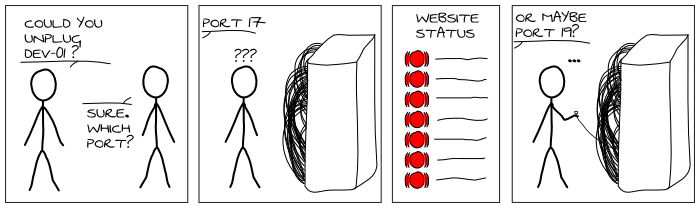

What is lldpd?

LLDP allows you to know exactly on which port is a server (and reciprocally).
LLDP is an industry standard protocol designed to supplant proprietary Link-Layer protocols such as EDP or CDP. The goal of LLDP is to provide an inter-vendor compatible mechanism to deliver Link-Layer notifications to adjacent network devices.
lldpd is a pretty complete implementation of LLDP for various
Unixes. It also supports some proprietary protocols.
Interested?
- Download the latest version (0.7.0).
- Check the list of features.
- Learn how to install lldpd.
- Learn how to configure and use lldpd.
- Get the code on GitHub.
- Add issues and feature requests.